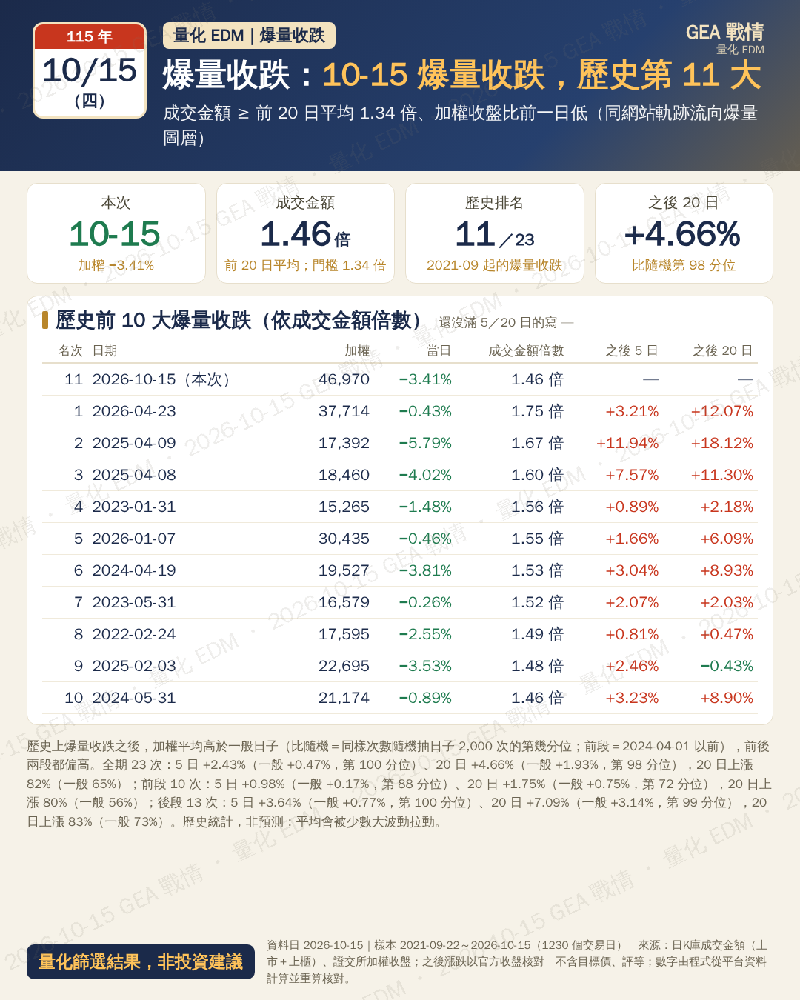

爆量收跌事件卡預覽（正式版同一段程式）
要看的重點
規則跟網站「市場 → 軌跡流向」爆量圖層同一段程式（tools/trail_flow.py hot_days），門檻 v2 先定（cff2d850）
有發生才出：最近 5 個交易日內有爆量收跌才出卡；列歷史前 10 大（依成交金額倍數）
今天（2026-11-16）：最近 5 個交易日沒有爆量收跌 → 不出卡（正式版這天不會有這張）
最近一次有發生（2026-10-15）：出卡
爆量收跌・最近一次有發生（2026-10-15）
下載 PNG

核對通過
加權收盤 22 筆對官方 market_series；最近一次成交金額倍數用官方上市＋上櫃金額重算
・正式版同一段 build()，只把資料截到 2026-10-15；沒有 force 參數